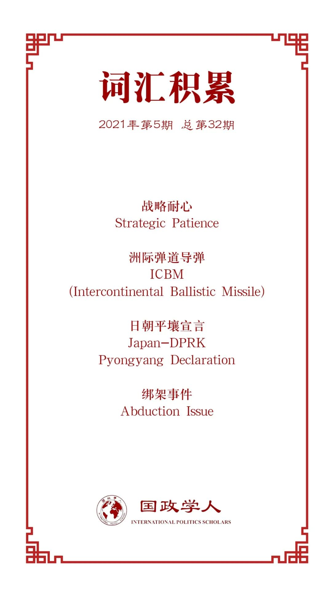

收录于合集

作品简介
【作者】 平岩俊司（Shunji Hiraiwa），日本南山大学政策研究学院政策研究系教授，研究兴趣为朝鲜半岛问题、东亚国际关系。
【编译】 杨朔（国政学人编译员，大连外国语大学国际关系学院）
【校对】 唐一鸣 缪高意
【审核】 阮镇炜
【排版】 余姣
【美编】 李九阳
【来源】 Shunji Hiraiwa (2020) Japan’s policy on North Korea: four motives and three factors, Journal of Contemp orary East Asia Studies , 9:1, 1-17
【归档】 《国际关系前沿》2021年第5期，总第32期。
期刊简介
《当代东亚研究期刊》（ Journal of Contemporary East Asia Studies ）是一份提供当代东亚深入研究内容的开放期刊。它是日本早稻田大学(Waseda University)的早稻田当代中国研究所(Waseda Institute of Contemporary Chinese Studies)的官方刊物。该期刊的主要目的是通过本地和国际作者的文章发表，培养对当代东亚主要子领域的不同观点。
日本对朝政策：
四项动机与三个因素
平岩俊司
文章导读
研究背景 :尽管日本政府历经多次更迭，日本对朝政策的中心模式一直保持不变。
研究目的 :本文总结了冷战后日本的对朝政策，考察了日本对朝政策的结构，并在此基础上分析了日本当前的对朝政策以及未来趋势。
主要论点 :日朝关系正常化可能是日本政策的主要目标，但其还存在以下四个动机。第一，对日本来说，与朝鲜的关系正常化是一个重要的战后进程；第二个动机涉及对安全问题的反应；第三，有关日本人生命安全的问题；第四，必须考虑日本在朝鲜的经济机会。日本以这四个动机寻求发展与朝鲜的关系，这一态势将在未来继续保持。
然而，日本对朝政策受以下三个因素的制约。第一个因素是国际环境；其次，日朝关系受到韩国态度的制约；最后，日本的国内政治也决定了日本对朝政策。
结论 :对日本而言，上述四个动机将保持不变。但与此同时，上述三个制约因素决定了日本对朝鲜的态度，而这三个因素正促使日本与朝鲜进行谈判。本文总结了冷战后日本的对朝政策，考察了日本对朝政策的结构，并在此基础上分析了日本当前的对朝政策以及未来趋势。日本和朝鲜的关系正常化可能是日本政策的主要目标，但其还存在上述四个动机。然而，日本并不打算不受限制地与朝鲜实现双边关系的正常化，其政策还受上述三个因素的制约。
引言
由于两国最初的共产党相似，冷战期间日本和朝鲜的关系是由日本共产党建立的，但朝鲜在1968年试图渗透首尔并袭击总统官邸遭到了日本共产党的反对，使两国逐渐疏远。从20世纪70年代前后开始，日本社会民主党(Social Democratic Party of Japan)就与朝鲜结成了伙伴关系。冷战期间，日本执政党与朝鲜没有交往关系。冷战结束后，执政的自民党(Liberal Democratic Party)开始与朝鲜进行外交关系正常化谈判，这成为日本后来对朝政策的模式。2002年，日本首相小泉纯一郎(Junichiro Koizumi)首次访问朝鲜，并与朝鲜最高领导人、国家事务委员长金正日(Kim Jong Il)于平壤会谈。此外，由于日本公众舆论强烈反对朝鲜对绑架问题的反应，这已成为日本考虑对朝政策时不可避免的一个重点。日本政府历经多次更迭，但以这种方式形成的对朝政策模式一直保持不变。
日本对朝政策的最大变数无疑是朝鲜本身的立场，但本文旨在界定日本对朝政策的结构，并检视日本对朝政策的未来。
01
日本对朝政策：四个动机
首先，对日本来说，与朝鲜的关系正常化是一个重要的战后进程。1965年，日本与韩国签订了《日本国与大韩民国基本关系相关条约》，实现了邦交正常化。根据该条约，日本政府承认韩国为“朝鲜半岛唯一合法政府”。尽管这一承认受到了日本朝鲜族居民总会和日本社会党等派系的强烈抵制，但日本首相佐藤荣作(Eisaku Sato)在国会推动了这一决定。当时，佐藤荣作说，“与朝鲜的关系是一张白纸。”尽管认为韩国是“朝鲜半岛上唯一合法的政府，但日本政府保留了在事态发生变化时与朝鲜关系正常化的可能性。由于朝鲜是共产主义国家，日本各政党对朝鲜的基本立场各不相同，但无论哪个政党执政，与朝鲜关系正常化都是日本必须实现的挑战。此外，日本政客对二战前的殖民统治负有道德责任，但他们的野心是通过彻底清除日本在二战中的负面影响，在国际社会中发挥更积极的作用。这在前首相中曾根康弘的“战后政治总决算”和首相安倍晋三的“摆脱战后政权”中可见一斑。
二是要着力解决安全问题。1998年8月朝鲜发射“Taepodong Ⅰ”导弹后，日本首次承认朝鲜对其国家安全构成威胁。朝鲜坚称，这是一颗用于太空探索的卫星。但导弹在没有事先通知的情况下飞越日本列岛上空，就国际法而言是不恰当的。这实际上意味着朝鲜已经获得了弹道导弹技术，并具有攻击日本的能力。从那以后，朝鲜的核计划和导弹计划被认为对日本构成直接威胁。朝鲜在推进核计划的同时，也在寻求改进导弹技术，声称在2017年11月成功发射了一枚射程覆盖美国全境的洲际弹道导弹(ICBM)，并在9月成功将该导弹小型化。因此，朝鲜获得了对美国的核影响力，这成为2018- 2019年美朝会谈的基础。朝鲜在全球层面的核导弹问题无疑对日本很重要，但朝鲜已经部署了射程覆盖整个日本群岛的短程弹道导弹，这是一个更大的问题。日本需要消除朝鲜短程和中程弹道导弹构成的威胁。此外，因为它与中国的关系，朝鲜半岛也具有重要意义。中国现在是仅次于美国的第二大政治、军事和经济强国，在东北亚有着巨大的影响力。中国与朝鲜半岛均关系到东北亚地区的和平与稳定，因此，为了维护该地区的和平与稳定，日本还需要处理好与朝鲜的关系。
日本对朝鲜政策的第三个动机是日本人的生命安全。2002年，小泉首相首次访问朝鲜期间，朝鲜承认了绑架事件。此后，这一直被视为日朝之间最重要的问题。日本人认为朝鲜对绑架事件的态度是不真诚的,这对日本的政策产生了深远的影响。形成一个国际支持体系固然重要，但这是一个需要日本和朝鲜讨论的问题。日本政府必须与朝鲜建立正常的关系，以便能够讨论有关日本人民人身安全的问题。
第四，还必须考虑日本在朝鲜的经济机会。如果朝鲜继续推进开放，日本将得到重大的商业机遇。在朝鲜承认绑架事件后，日本对朝鲜的舆论变得更加消极，导致日朝经济关系急剧下降。虽然日朝会谈自那时以来一直停滞不前，但日本一再坚持，在《日朝平壤宣言》的基础上恢复两国关系，这对北韩来说也是一个机会。此外，稀土等地下资源是国际非常关注的资源。中国目前在这一贸易领域发挥较大作用，但如果日本公司能够适时参与，这对日本经济将具有重大意义。
02
日本对朝政策的三个因素
第一个因素是国际环境。日本在冷战期间属于西方阵营，它无法与属于东方阵营的朝鲜建立关系。日中关系也是如此，但随着中美关系的发展，日中关系发生了变化。美国和中国之间的做法缓解了集团之间的紧张关系，创造了一种鼓励跨集团关系的氛围。此后，日本于1972年实现了对华关系正常化。毫无疑问，冷战时期日本外交的整体国际环境是由美国政策决定的。冷战结束后，日本面临的国际环境更加复杂，美国、中国、俄罗斯以及联合国等国际组织也开始对日本的外交政策施加影响。始于全球冷战结束之际的日朝关系，在很大程度上仍由美国的政策决定。
其次，韩国的影响不可忽视。访问团的目的是确保“富士山丸”上两名被扣押的船员获释，并启动改善日朝关系的政府间谈判。朝鲜采取了更积极的立场，表示包括“从11月开启关于两国之间的谈判”在内的联合声明。韩国对此的反应较为激烈，日方事先解释说，此行的目的是“打开富士山丸18号两名船员获释和政府间对话的窗口”。卢泰愚（Roh Tae- woo）总统认为日韩政府间“足够的事先咨询”是必要的。1988年,卢泰愚发表的《特别声明》表示,韩国政府将帮助改善朝鲜、日本和美国之间的关系。卢泰愚总统认为日本和美国不会自行其是地与朝鲜建立关系。相反，韩国的“合作”，即它的“参与”，被认为是理所当然的。无论政府如何变动，这始终是韩国政府的基本立场。
随着日朝会谈的启动，日本的国内政治似乎是决定日本对朝政策的第三个因素。日朝关系正常化谈判第一次会议在平壤举行，第二次会议在日本举行，第三次会议在北京举行。谈判议程包括安全、过去的定居点建设和失踪的日本人等问题，但由于没有看到预期的进展，朝鲜于1992年单方面宣布在第8轮谈判中终止谈判。次年3月12日，朝鲜宣布退出《不扩散核武器条约》，引发了其首次核危机，日朝关系难以建立。
03
小泉访问与六方会谈:
与国际社会共享目标
2002年9月，小泉纯一郎访问朝鲜，与朝鲜领导人金正日举行会谈并签署了《日朝平壤宣言》（the Pyongyang Declaration），这是日本首相首次访问朝鲜。小泉首相多次表示，他此行的目的是确定能否恢复正常化谈判，他表示恢复谈判的条件是使朝鲜和日本的外交关系正常化，并确定朝鲜是否愿意为解决现有问题尽自己的一份力量，即朝鲜与国际社会的问题(特别是核和导弹计划等安全问题)，以及日本与朝鲜之间的双边问题(特别是绑架和身份不明的船只问题)。
在会议上，两国领导人确认，他们将合作维护和加强东北亚地区的和平与稳定，金正日表示，他打算在2003年后暂停导弹试验。此外，朝鲜国防委员会委员长金正日承认了绑架日本人民的问题，并承诺惩罚相关人员，防止此类事件再次发生。平壤宣言中提到，在解决了绑架、核武器、导弹等问题以及关系正常化之后，日本将向朝鲜提供大规模的经济支持。
据朝鲜透露，被绑架者中有5人幸存，8人死亡，这让日本感到震惊。此外，受害者的死亡原因不明，这激怒了日本公众，他们认为朝鲜的行为是不真诚的体现。尽管如此，小泉首相还是根据平壤宣言恢复了邦交正常化的谈判，并呼吁朝鲜归还所有被绑架者。
小泉访问朝鲜后,美国助理国务卿约翰·凯利（John F.Kelly）访问朝鲜，就其核开发和铀浓缩项目展开会谈。朝鲜承认正在进行铀浓缩项目，并表示“朝鲜已经到了拥有核武器或更多核武器的地步”。核项目和导弹问题对日本来说非常重要，但这一国际事件极大地影响了日朝重启谈判的时机。同时，被绑架者的家属要求日本政府不要因此将这五人归还朝鲜，日本政府接受了这一要求。朝鲜反过来指责日本政府违反协议，日朝在绑架问题上的分歧在随后举行的第12次关系正常化会谈上没有得到解决。因此，就日本国内局势而言，第三个因素——主流情绪——导致了与朝鲜谈判的中止。
关于《日朝平壤宣言》，日本与朝鲜关系正常化需要解决两个问题:绑架问题(双边关系的象征)和朝鲜与国际社会的问题。然而，绑架问题的解决和核问题与导弹问题的解决并没有达成同步。一方面，如果绑架问题没有取得进展，而核导问题谈判取得进展，绑架问题就会被抛在后面。另一方面，如果核导问题停滞不前，即使绑架问题取得进展，国际社会也会施加限制。因此，绑架与核和导弹问题的联系或分离是日本的重要考量之一。
最后，日本主张在不把绑架问题与核导问题分开的情况下，寻求全面的解决方案，认为解决各种问题都需要“对话”和“施压”。为此，国际社会应加强合作，呼吁改变对朝立场，同时兼顾“对话”和“施压”;这已成为当前日本对朝政策的模式。
由于绑架问题仍停留在日朝双边讨论的基础上，与国际社会的合作对日本来说是一项艰巨的任务，在2003年8月开始的有关朝鲜核问题的六方会谈中尤其如此。国际社会关注的焦点是核问题，但日本寻求全面解决绑架、核计划和导弹问题，必须避免为了解决核和导弹问题而忽视绑架问题。日本国内的观点是，只要绑架问题没有进展，日本就应该对朝鲜采取不妥协的态度。绑架问题的解决对于日本政府在六方会谈中发挥何种作用至关重要。
在这种情况下，日本成功地将绑架问题作为第四次六方会谈的共同目标。一旦把这些问题联系起来，核问题和导弹问题的进展就给日本在与朝鲜的经济合作方面带来了相应的负担。当日本提出绑架问题的进展对经济合作至关重要时，有关国家开始向日本施压，要求其解决该问题。这种倾向在期望核导弹问题取得进展时表现得尤为突出；当核导问题停滞不前时，日本就很难单独与朝鲜进行经济合作，而在绑架问题上将容易得多。
04
日朝关系：
斯德哥尔摩协议与安倍政府
不幸的是，朝鲜在2006年10月六方会谈期间进行了第一次核试验。2008年12月举行了进一步的六方会谈，但最终中止。奥巴马政府上台时，最初曾试图与朝鲜开启对话。然而，朝鲜进行了一次洲际弹道导弹发射试验，并将其称为卫星发射试验，而美国将其立场转变为为“战略耐心”（strategic patience），即在朝鲜改变立场之前不会做出回应。日本没有限制其主要政策，只是像韩国一样，对朝鲜采取了和解的政策。因此，日本对朝政策是由国际环境决定的，这是第一个因素。而韩国的态度是第二个因素，“斯德哥尔摩协议”是这方面的一个案例。
根据“斯德哥尔摩协议”，朝鲜将成立一个特别调查委员会，对四个问题进行重新调查:日本人的遗体；留在朝鲜的日本人及其配偶；被绑架者；失踪人员(包括日方要求的具体失踪人员)。然而，会谈并不总是顺利进行，因为朝鲜试图优先考虑日本人的遗骸问题和留朝日本人及其配偶的问题，而对日本来说，在绑架受害者问题上取得进展至关重要。2016年1月，朝鲜进行了一次核试验和弹道导弹发射试验；2016年2月，日本对朝鲜实施了新的独立制裁。更具体地说，日本政府限制了日朝之间的人员流动，限制向朝鲜汇款，全面禁止朝鲜注册船只进入日本港口，并扩大了资产冻结的范围。朝鲜反对这些制裁，单方面宣布中止“重新调查”并解散调查委员会。日本的态度从“对话”转向“施压”。
05
特朗普的出现与日本对朝政策
在奥巴马政府执政的最后一年，朝鲜希望在美国新政府组建之前尽可能地提高其核能力和导弹能力。2016年，即美国总统大选之年，朝鲜先后进行了两次核试验，并陆续进行了13次发射，包括被称为卫星发射的远程弹道导弹、潜射弹道导弹、短程和中程弹道导弹。唐纳德·特朗普当选总统后，朝鲜停止了核试验和导弹试验。当特朗普政府对朝的强硬立场变得明显时，朝鲜于2017年9月恢复了核试验和导弹试验。自2017年2月以来，朝鲜进行了16次各类型的导弹试验，并在该年11月29日进行了“火星-15”洲际弹道导弹的试验发射。朝鲜声称它已成功地把整个美国囊括在其射程内，且具有针对美国的核打击能力。
然而，朝鲜于2018年采取对话路线。在特朗普做出回应后，安倍的观点发生了巨大变化。据特朗普总统称，安倍晋三改变了“毫无意义的为了对话而对话”的立场，发推称他“对与朝鲜的谈判非常热情”。此外，在美朝峰会之前，安倍首相在七国集团峰会的新闻发布会上表示，如果绑架问题得到解决，他将“准备提供经济合作”。
此外，在2018年联合国的一次演讲中，安倍首相说:“我也愿意打破与朝鲜的互不信任，直接面对金正恩委员长，重新开始。”这与他前一年在联合国大会上所说的“必要的是施压，而不是对话”相比，是一个重大变化。特朗普总统态度的变化意味着，对日本来说，第一个因素将发生巨大变化。在这种情况下，可以预期日本将改变其态度，以在国际环境中发挥最大效力的方式作出反应。此外，由于以美朝峰会为象征的2018年后的对话氛围是在韩国的倡议下进行的，所以第二个因素——韩国的立场，表明它乐见日朝关系的进展。在美朝峰会、朝韩峰会、中朝峰会的背景下，第三个因素——日本国内的政治气氛，对于日本拒绝会见金正恩充满了忧虑；被绑架者的家属也在寻求与朝鲜进行沟通，因此，所有因素都指向与朝鲜开始“对话”。
结论 ****
对日本来说，这四个动机是不变的。然而，三个因素决定了日本对朝鲜的态度。日本要想独立与朝鲜建立关系，就必须在这三个方面积极努力。
日本对朝政策的形成是基于这四个动机和三个因素，但与朝鲜打交道的方式取决于当前日本政府对这四个动机的重视程度。如果日本政府的目标是与朝鲜建立关系，它不仅会对朝鲜采取行动，还会对国际环境以及韩国采取行动。无论如何，如果美朝关系取得进展，日本的作用将继续增强。
针对日本谴责朝鲜发射短程弹道导弹是“违反联合国决议”的行为，负责日朝外交关系正常化的大使宋义浩（Song Il- ho）表示，日朝关系持续紧张，两国可能会“面临更大的灾难”。
译者评述
本文对日本对朝政策制定的背景及成因进行了分析。根据本文，朝核问题对日本国家安全的威胁、朝鲜境内日本人的人身安全、日本在朝鲜的经济机会、东北亚地区的长期稳定等，都是日本制定对朝政策的动机。这些动机在本质上是一致的，即有效管控双边关系向冲突的趋势发展并维护自身利益。同时，受美国影响较大的国际环境、韩国的影响、日本的国内政治环境是日本制定对朝政策时不得不考虑的因素。
作者认为，日本需要争取与朝鲜取得独立联系，处理绑架事件等相关事宜。但朝鲜半岛问题特别是朝核问题是世界性的，日本制定对朝政策的过程难免受到美国与韩国的影响，布什的单边主义和李明博任期内对朝鲜的敌意正是促成朝鲜追求有核国家地位的动机之一。某种程度上，对包括对美韩在内的其他国家进行施压以换取经济援助与安全是朝鲜的目标，所以美韩暂时难以摆脱朝鲜半岛的泥潭，日本在制定对朝政策时需要在国家形象、双边关系、国家利益间达成平衡。
词汇整理

文章观点不代表本平台观点，本平台评译分享的文章均出于专业学习之用, 不以任何盈利为目的，内容主要呈现对原文的介绍，原文内容请通过各高校购买的数据库自行下载。
好好学习，天天“在看”
国政学人
支持学术公益与知识传播
微信扫一扫赞赏作者 __赞赏
已喜欢，对作者说句悄悄话
取消 __
发送给作者
发送
最多40字，当前共字
上一页 1/3 下一页
长按二维码向我转账
支持学术公益与知识传播
受苹果公司新规定影响，微信 iOS 版的赞赏功能被关闭，可通过二维码转账支持公众号。